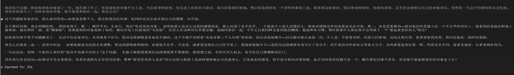

Q.我问你个问题，假如你和你对象谈了一年，现在都工作了。你发现你的对象不太上进，不注重身材管理，有生活上的很多小缺点，成天回家就打游戏；然后你发现你有一个异性同事很上进，很喜欢这份事业，很自律身材很好，你很欣赏他，忍不住会将他与自己的对象对比。突然有一天这个同事约你出去吃饭，说喜欢你很久了，问你有没有对象，愿不愿意和他在一起，你怎么办？
A.如果是我，我不会当场接受同事，也不会一边保留对象、一边偷偷考察同事。
我会直接告诉同事：
“我有对象。谢谢你的喜欢，但在现有关系处理清楚之前，我不会和别人发展感情，也不适合单独约会。”
然后把同事暂时从决策里拿掉，只问自己一个关键问题：
假如这个优秀同事从来没有出现，我是否依然想结束现在的关系？
因为你正在拿对象“未经修饰的日常状态”，和同事“工作场景中最闪光的一面”比较。你知道对象打游戏、懒散、生活习惯差，却还不知道同事在亲密关系里是否可靠、是否尊重边界、如何处理冲突和家务。上进、自律、身材好很吸引人，但不等于一定适合长期相处。
不过，比较产生了，也说明现有关系可能确实存在问题。身材管理属于个人选择，不能要求对方必须长成自己喜欢的样子；但生活态度、责任感、成长意愿和共同生活方式不一致，是完全正当的分手理由。
我会和对象认真谈一次，但不提“我同事比你优秀”，而是谈具体事实：
“我们现在都工作了，但你回家后大部分时间都在打游戏，生活和健康管理也越来越松散。我希望伴侣能和我一起建设生活、保持成长。你对未来的生活状态有什么打算？你愿不愿意和我一起做出一些实际改变？”
重点不是逼他短期表演，而是看三件事：
他是否真正理解你的需求；
他自己是否也想改变，而不是害怕失去你才敷衍；
改变能否持续，而不只是坚持几天。
如果他愿意，并且你仍然爱他，可以给关系一个明确的观察期。如果他认为现在这样很好，而你越来越无法接受，那就是价值观和生活方式不匹配，应当干净地分手——不是“为了同事换对象”，而是这段关系本身已经不适合继续。
分手以后也不要立刻无缝进入下一段。先留一点缓冲，再单独了解那位同事，同时考虑办公室恋情带来的利益冲突和分手风险。尤其要观察：他得知你有对象后，是否尊重你的边界。真正值得欣赏的人，不会催你脚踩两条船。
所以我的答案是：先拒绝越界，独立审视现有关系；要么认真修复，要么清楚结束。结束之后，才考虑同事。你真正要选择的并不是“两个男人谁更优秀”，而是“现有关系是否仍值得继续”。
Q.但是实际上如果没有这个同事出现，你可能就会和当前的对象凑合一辈子，甚至走入婚姻。但是因为这个同事表达对你的心意，你才这样考验你的现任。你怎么与这一点和解呢
A.这件事确实没法通过一句“把同事排除掉再判断”彻底洗干净，因为事实可能就是：同事的出现，让你第一次意识到自己原来有别的可能。人的很多选择本来就不是在真空里形成的。没有看过另一种生活时，我们常把“已经习惯”误认为“我愿意”。
这不意味着你的不满是假的，但也不意味着同事就是正确答案。
真正需要面对的是：你以前可能不是坚定地选择现任，而是因为惯性、沉没成本、害怕重新开始，准备一路凑合下去。这个认识会让人内疚，因为仿佛现任本来“没有犯大错”，却因为出现了更亮眼的人，突然被重新评分了。
和解的方法不是证明自己的动机绝对高尚，而是承认：
“是的，我的动摇来自一个现实的替代选择。我并不是凭空觉醒，也不是完全无私。但这个契机确实让我看见了自己长期压下去的需求。接下来如何处理，是我的责任。”
最重要的是，不要把现任变成一名临时参加竞赛的选手。不能因为同事自律，就突然要求现任减肥；因为同事上进，就给现任设置几个月的考核期；同时把同事留作备选。那对现任不公平，因为你不是在修复关系，而是在要求他击败竞争者。
你可以做一个更残酷、也更诚实的判断：
假如同事明天明确告诉我，他不再喜欢我，而且以后绝无可能，我还愿意和现在这个人结婚，并接受他大概率不会发生根本改变吗？
这里不是问“我会不会因为没人可选而继续”，而是问“我是否愿意主动选择他现在的样子”。如果答案是不愿意，那么同事只是揭开了问题，并没有制造问题。即使最终没有和同事在一起，也应该重新考虑现有关系。
反过来，如果同事一撤走，你对现任的那些不满立刻变得无足轻重，甚至仍然期待和现任共同生活，那么你的动摇很可能主要来自新鲜感、性吸引和理想化比较。这时不应该为了一个尚不了解的人毁掉一段仍然想要的关系。
还有一个很重要的检验：
我是否愿意承担“和现任分手后，同事也没有和我在一起”的结果？
如果你只有在确保同事接盘时才愿意离开，那更像是在换更优选项；如果即使最终两个人都失去，你仍认为不该和现任结婚，那才说明你是在为自己的真实选择负责。
所以，不必把自己解释成“同事只是让我觉醒”的纯洁角色，也不必因为念头由同事触发，就强迫自己留在一段想凑合的关系里。人的动机经常是混合的：不满、诱惑、比较、恐惧和成长同时存在。
真正能够让你与此和解的，不是动机毫无瑕疵，而是后面的行为足够干净：
不与同事暧昧，不把他作为保底。
不拿同事的优点羞辱或改造现任。
判断自己能否接受现任本来的样子。
如果不能，就为这段关系本身结束它，并承担可能两头落空的结果。
结束之后，再重新认识同事，而不是把他当成已经验证过的“升级版对象”。
你不欠现任“一辈子不改变标准”，但欠他一个不被比较、欺骗和无缝替换的过程。你也不必为看见另一种可能而羞愧，但必须为自己最后怎样选择负责。
后附图：fable5的回答
